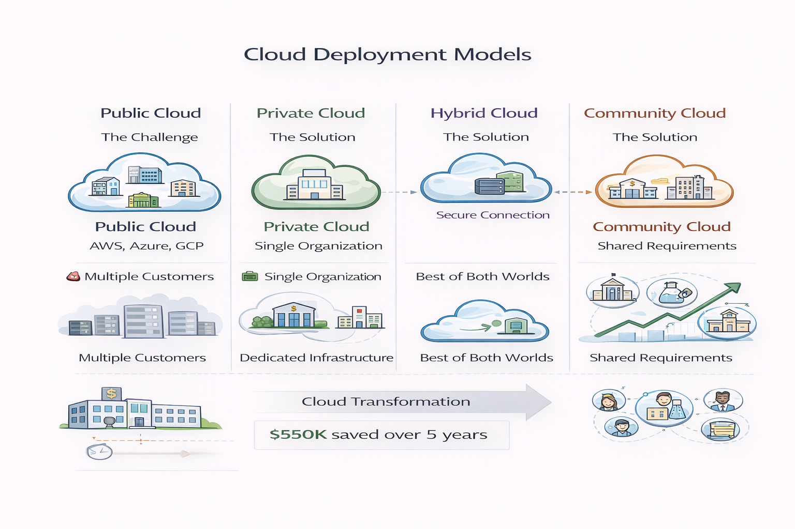
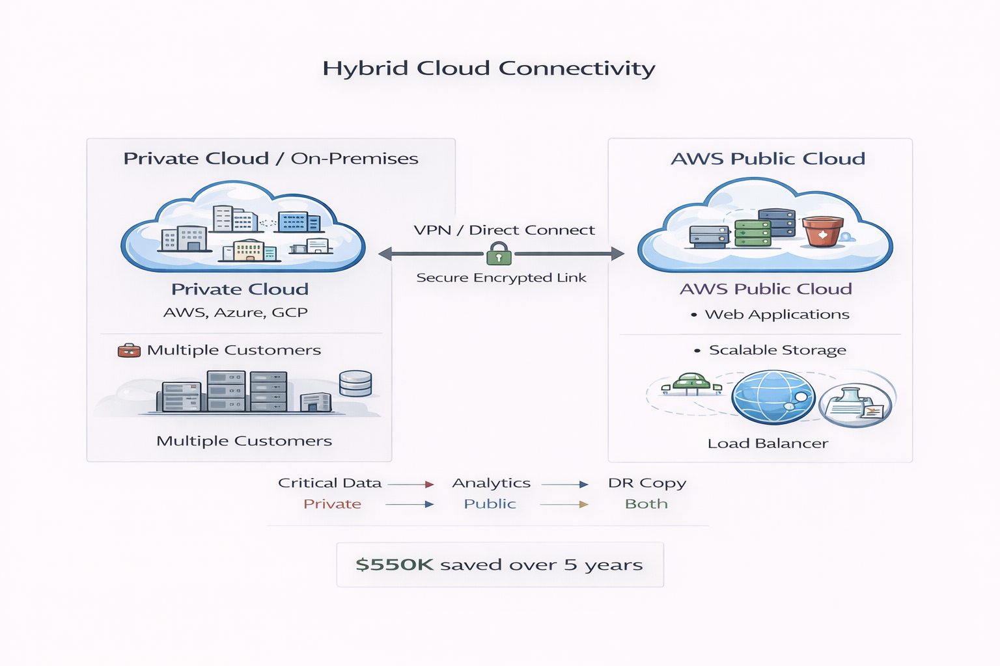

When we talk about cloud deployment models, we're really asking: "Who owns the cloud infrastructure, and who can use it?" Think of it like housing options - you can rent an apartment in a big building (public cloud), own a private house (private cloud), or have a combination of both (hybrid cloud).

Figure 1: The Four Cloud Deployment Models
1. Public Cloud - Renting Space in a Shared Building
Imagine you're renting an apartment in a huge apartment complex. You have your own apartment (your cloud resources), but you're sharing the building, electricity, and water systems with hundreds of other tenants. That's exactly how public cloud works!
The Apartment Building Analogy:
The cloud provider (AWS, Azure, GCP) owns and manages a massive "building" of servers. You rent "apartments" (virtual servers) in their building. You never see your neighbors (other customers), and you can't access their apartments, but you're all using the same physical infrastructure.
Public cloud infrastructure is owned and operated by third-party cloud service providers like AWS, Azure, and GCP, with resources shared across multiple customers.
When you use AWS EC2 to launch a server, you're using public cloud services where multiple customers share the same physical infrastructure with logical isolation between workloads.
Key Characteristics
- Shared Resources: You share the physical servers with other customers (but your data stays private and isolated)
- No Hardware Ownership: You don't buy or maintain any physical equipment
- Pay-As-You-Go: Pay only for what you use, like paying for electricity based on consumption
- Instant Scalability: Need more resources? Get them in minutes, not weeks
- Global Access: Access your resources from anywhere with internet
When to Use Public Cloud
✅ Perfect For:
- Startups and small businesses with limited budgets
- Web applications and mobile app backends
- Development and testing environments
- Projects with unpredictable traffic (can scale up/down easily)
- Companies wanting to avoid hardware management
Real-World Example: Netflix uses AWS public cloud to stream movies to millions of users worldwide. They don't own the servers - they rent capacity from AWS and scale up during peak hours (Friday night!) and scale down during off-peak times.
Major Public Cloud Providers
- Amazon Web Services (AWS): The biggest player, offering 200+ services
- Microsoft Azure: Strong integration with Microsoft products
- Google Cloud Platform (GCP): Excellent for data analytics and AI/ML
2. Private Cloud - Your Own Private House
Now imagine instead of renting an apartment, you build your own private house with all your own utilities. You have complete control, maximum privacy, but also all the responsibility and cost. That's private cloud!
Private cloud is dedicated infrastructure used exclusively by a single organization, providing maximum control and customization.
The Private House Analogy:
A bank builds its own "cloud-like" infrastructure in its own building. They have their own servers, their own security team, and complete control. Only bank employees can use these resources - no sharing with outsiders.
Key Characteristics
- Single Tenant: Only your organization uses the infrastructure
- Full Control: You decide everything - security policies, hardware choices, configurations
- Higher Cost: You pay for all the hardware upfront (CapEx model)
- Predictable Performance: No "noisy neighbors" affecting your performance
- Customization: Build exactly what you need
When to Use Private Cloud
✅ Perfect For:
- Banks and financial institutions with strict security requirements
- Healthcare organizations handling patient data (HIPAA compliance)
- Government agencies with classified information
- Companies with existing large data center investments
- Applications requiring guaranteed performance
Real-World Example: A hospital might use private cloud for storing patient medical records. They need complete control over data security and must comply with healthcare regulations (HIPAA), so they can't risk sharing infrastructure with others.
How to Build a Private Cloud
You can create cloud-like features in your own data center using software like:
- VMware vSphere - Create and manage virtual machines
- OpenStack - Open-source private cloud platform
- Microsoft Azure Stack - Run Azure services in your data center
3. Hybrid Cloud - Best of Both Worlds
What if you could have both a private house for your valuables AND rent storage space when needed? That's hybrid cloud - connecting your private infrastructure with public cloud services.
Hybrid cloud combines public and private cloud infrastructure with connectivity between them, enabling workload portability and unified management.
The House + Storage Unit Analogy:
You keep your important family documents in your private home safe (private cloud), but when you have extra seasonal items, you rent a storage unit (public cloud). Both are accessible to you, and you can move things between them as needed.

Figure 2: Hybrid Cloud - Connecting Private and Public Infrastructure
Key Characteristics
- Flexibility: Choose where each workload runs based on requirements
- Data Control: Keep sensitive data on-premises, non-sensitive in public cloud
- Cloud Bursting: Use public cloud when private cloud capacity is full
- Gradual Migration: Move to cloud slowly, one application at a time
When to Use Hybrid Cloud
✅ Perfect For:
- Companies transitioning from data centers to public cloud
- Organizations with data residency requirements (data must stay in specific country)
- Seasonal businesses needing extra capacity during peak times
- Companies separating sensitive and non-sensitive workloads
Real-World Example: An e-commerce company keeps customer payment information in their private cloud (for security compliance) but runs their website and product catalog on AWS public cloud (for global scalability). During Black Friday sales, they "burst" extra traffic to public cloud while sensitive payment data stays private.
4. Community Cloud - Sharing with Your Neighbors
Community cloud infrastructure is shared among organizations with common requirements, regulatory obligations, or security concerns.
The Neighborhood Analogy:
Several universities in the same city pool their money to build a shared research computing facility. Each university has access, they all share the costs, and they all have similar security and research requirements.
When to Use Community Cloud
- Research institutions sharing expensive computing resources
- Healthcare organizations with shared HIPAA compliance needs
- Government agencies with similar security requirements
- Financial institutions with common regulatory obligations
Note: Community cloud is less common than the other three models. For AWS certification exams, focus primarily on public, private, and hybrid cloud models.
Quick Decision Guide
| Your Situation | Best Model | Why |
|---|---|---|
| Startup with limited budget | Public Cloud | No upfront costs, pay-as-you-go |
| Bank handling financial transactions | Private Cloud | Maximum security and control |
| Company with existing data center | Hybrid Cloud | Keep investments, add cloud flexibility |
| E-commerce with seasonal traffic | Public or Hybrid | Scale during peak seasons |
| Healthcare with patient data | Private or Hybrid | Regulatory compliance requirements |